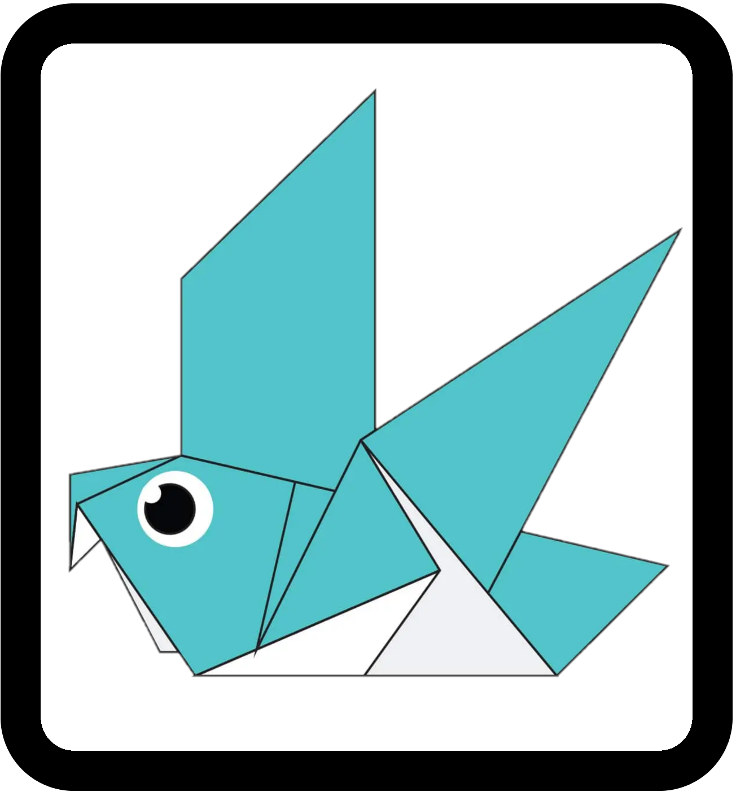

Origami Designs
Follow Us
ğŸ€ğŸŒ» Here we make you to do origami as well as many intersting facts just click on the photos and start making 🌻ğŸ€

🕊️ Interesting facts about Pigeon 🕊ï¸
- * Pigeons are reowned for their outstanding and navigational abilities.
- * Pigeons have excellent hearing abilities.
🼠Interesting facts about Giant Pandas ğŸ¼
- * Giant Pandas spend about 14 hours a day in eating bamboos.
- * Giant pandas has about 42 teeths through which they can eat.
🪠Interesting facts about Camel ğŸª
- * Camels can move anywhere with there strong feet in the sand and hence are also known as ship of desert.
- * A thirsty camel can drink around 30 gallons at a time.

🦠Interesting facts about Camel ğŸ¦
- * Camels can move anywhere with there strong feet in the sand and hence are also known as ship of desert.
- * A thirsty camel can drink around 30 gallons at a time.